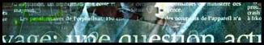

Isos are full cdrips. Often 600+ megs in size, and limited to those with cd burners and large bandwith, isos are still attracting a lot of interest. Razor and RiSC have both started iso divisions, but are isos really the next step? more
by DToxR
TRG's 'Games of the Year' Project
It may be TRG's project, but it won't be TRG's decision. Look in upcoming releases from RZR, CLS, PDM, and TRG for information on how you can cast your vote for game of the year. more
by MeAD

Twilight dies
One of the art scene's best groups passed away quietly this weekend. The news came suddenly to the scenelink offices, er, channel, so an article was unavailable by publication. The article should be up within a few days. Till then read Twilight's final words at www.twilightweb.com
The Drink or Die T-Shirt Contest has been running for about 6 months now and will wrap up the first of the year. We have received over 50 submissions so far. The contest rules are simple. Anything goes. Color, B&W, whatever. We have a professional printing company lined up to do the actual shirts, so complexity / color depth is not an issue. Although, we would like a front/back design. The color of the actual t-shirts will be decided on when the winner is picked, so all background options are open. Making submissions is easy, just attach the graphic via email address t-shirt@drinkordie.com. The winner gets a free t-shirt. For further updates, check www.drinkordie.com
The Evil Advisor
DOD Leader
RNS has been temporarily shut down for an undetermined period. No new releases, no offers, no new members. All public sites have been shut down too. This is obviously caused by the new NET act that become law last Wednesday. No RNS members or collaborators will pay for whatever "bad" we may have done even though we do not feel like the government officials really are going to track down thousands of so called "pirates" like you and us.
Space-Hog, Senior member
thugZsta, Founder
The magazine will be a cooperative effort and should resemble Hybrid's issue from last year. Simmilar, but a little more serious. Articles were accepted from the general public so there will be a wide variety of issues discussed. ][ce will be in charge of Razor's end, while Mad Turnip is expected to return as Hybrid's magazine coordinator.
The magazine's engine is being kept a secret, but it would be safe to assume that it will look somewhat like Hybrid's previous issue.
MeAD, scenelink
To All the OZ doods out there, add 1831 to your numbers as caller-id is out there.... for anyone who cards ozemail they will check up now! Everyone in SA, we are the test state so watch out! So Just <statecode> 1831 <normalnumber> this stops the other end from seeing your number.
BlackDeath, VICE
I am killing the unproductive people among the group, and we need new writers ... so i am "changing the people" .... and although we have like 60 articles to issue 6... it was on delay because I set a minimum of 80 articles per issue, for quality controll and that didn't go well with school and slacking members, so i am making some drastic cuts. But the delay for issue 6 was due of me making a new game for relativity, which rox the ass of all other :), and I added voc support, increased the speed of the emag by 10 times (allmost). Anyway, my point is "WE NEED NEW BLOOD !!" For all the people out there : we want you, come join the relativity family, and get your voice on the scene without working your ass spreading warez or running sites, just WRITE FOR REV. Our issue is planned b4 the end of xmas, so be tuned to #relativity or http://www.mirage.org/relativity. For all of you outthere that know the program CHEAT MACHINE, I am (MuadDib) coding a new program for the company, the program called SGA "Sherlock The Game Analayzer" for analayzing your save games, but that is not the point, the point is that Relativity has an ad in Cheat Machine :).
MuadDib
THE WORLD'S REAL TOP 50 SITEZ is cracking down on intellectual copyright volations. They claim that "XXX Password trading hurts the adult entertainment industry" and they're probably right. more
Ethical unless there's money
An internet advertising agency notes that "there are certain kinds of sites that are not suitable for the Safe-Audit Network...
Host sites that contain pornograghy or pirated/illegal software. We cannot accept the following types of sites on the Safe-Audit Network but we are putting up a dedicated network for such sites. Please register your name here and we will inform you when that has happened."
Remmember, nobody minds if you break the law as long as they can somehow make money off of you. visit them